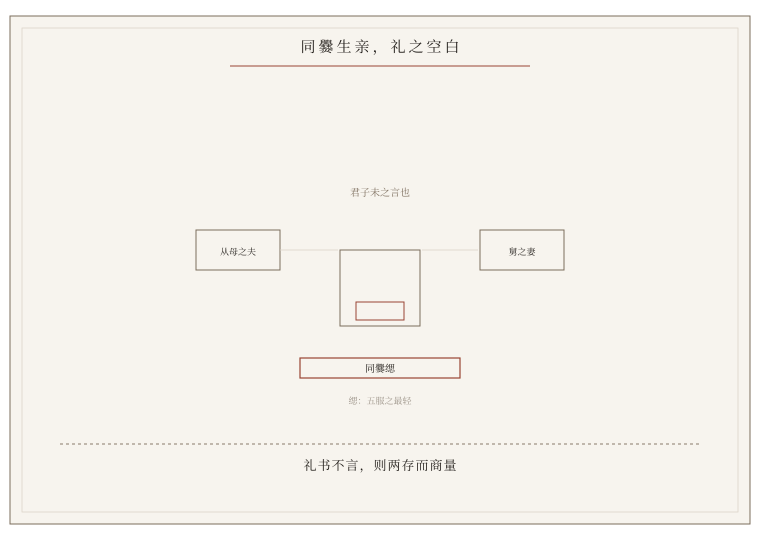

檀弓上 · 三·六十八 · 第 271 课
從母之夫，舅之妻，二夫人相為服，君子未之言也。或曰，同爨緦。
说什么事：姨父与舅母，这两个人彼此该不该为对方服丧？礼书没有说过。有人说：同灶吃饭的，服缌。
落在哪一层：礼，兼及礼数与礼意。论「礼所不言者，有权有疑」。
为何编在此位：上节论礼之定（人不换），此节论礼之缺（书不言）。定处不可移，缺处须商量。
【经】從母之夫，舅之妻，二夫人相為服，君子未之言也。或曰，同爨緦。
【注】二夫人犹言此二人也。时有此二人同居、死相为服者，甥居外家而非之。或曰同爨缌，以同居生缌之亲可。
【疏】此一节论失礼之事。知「同居」者，以下云「同爨缌」，故知同居也。云「甥居外家而非之」者，以言从母及舅，皆是外甥称谓之辞，故知甥也；若他人之言，应云妻之兄弟妇、夫之姊妹夫相为服，不得云「从母之夫，舅之妻」也。言「甥居外家而非之」者，谓甥来居在外姓舅氏之家，见有此事而非之；或云「外家」者，以二人同住甥居外旁之家，遥讥之。「或曰同爨缌」者，甥既将为非礼，或人以为于礼可许：既同爨而食，合有缌麻之亲。此皆据缌麻正衰，非吊服也，故云「相为服」；若是吊服，疏人皆可，何怪此二人。何胤以为吊服加麻绖如朋友然，非也——凡吊服不得称服，故上云「请丧夫子若丧父而无服」，时朋友吊服而称无服，故知此「相为服」非吊服也。
从母 母之姊妹，姨母。
从母之夫 姨父。
舅之妻 舅母。
二夫人 注「犹言此二人也」。「夫」读扶。
相为服 彼此为对方服丧。
君子未之言 礼书未说。君子，谓制礼者。
或曰 另一种说法。
同爨 同灶而食。爨，炊。
缌 缌麻，五服之最轻者。
姨父与舅母，这两个人彼此为对方服丧——制礼的君子没有说过这事。有人说：同灶吃饭的，服缌麻。
此节是一段「礼的空白」，以及一段「对空白的两种态度」。
第一种态度是「非之」：甥在外家见此二人相为服，以为非礼。其非之有理：姨父与舅母，一为母之姊妹之夫，一为母之兄弟之妻，皆非血属，礼无其服。
第二种态度是「或曰同爨缌」：既然同灶吃饭，就合有缌麻之亲。此为「以同居生亲」：礼之亲，不独血属。
经文并记两说，不下断语——「君子未之言也」六字，是记者对礼书的诚实：礼没有说，我们也不替它说。
第一层 礼书有不言处 礼不是一部无所不包的法规。此节正面承认「未之言」。承认空白，是礼学的一部分：不知为不知，则不妄造。
第二层 两种态度并存 一「非之」，一「或曰可」。经并记而不裁，注亦只解其文。此为《檀弓》常见的存疑法：与其强断，不如两存，让人自以其情与理处之。
第三层 同爨生亲 「同爨缌」是一条极重要的原则：礼之亲，有以血属，有以同居。同灶而食，是共同生活之实；礼认这个实。「缌」是最轻的一服，正合这种「有实而无名」的关系。
第四层 正服与吊服之别 疏辨之甚严：此云「相为服」是缌麻正衰，非吊服。若是吊服，则「疏人皆可」，何足怪。何胤以为吊服加麻绖如朋友，疏斥之，并引上节「请丧夫子若丧父而无服」为证：朋友吊服而称「无服」，可见吊服不得称「服」。此一辨，把「服」与「吊服」两词钉住。
与今日何干 今日的家庭关系里，这种「有实无名」的关系极多：继亲、姻亲、长期同住的伙伴、照护者。礼书没有条文，人却要决定如何相待。此节给的尺不是答案，是态度：先承认没有条文，再看有没有「同爨」之实。
| 左 | 右 |
|---|---|
| 从母之夫、舅之妻 | 皆非血属 |
| 相为服 | 缌麻正衰 |
| 君子未之言 | 礼书无文 |
| 甥非之 | 以为非礼 |
| 或曰同爨缌 | 以同居生亲 |
| 同爨 | 共同生活之实 |
| 缌 | 五服之最轻 |
| 吊服不得称服 | 疏之严辨 |
画一间外家堂屋的偏院，视点平。院中一座土灶，灶上架着一只陶釜，釜下有余烬；灶旁一张矮案，案上两只粗碗、两双箸。院角立着一位士人（甥，年少、袖手、侧身而立），面向灶案。院门外一株老槐。不写文字、不画人面细节。赭色只用在灶膛里那点余烬与两只粗碗的圈足。
